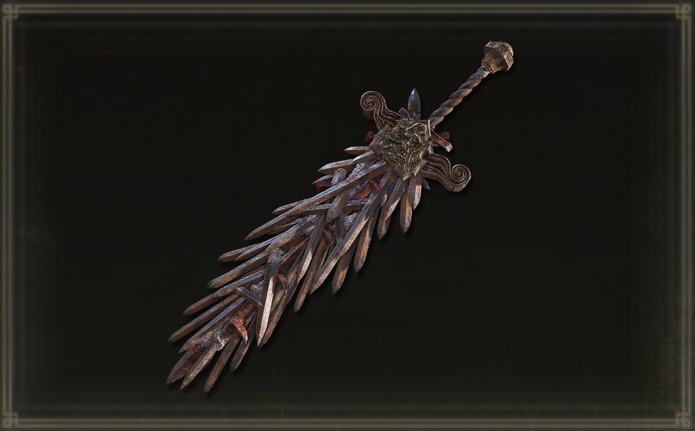

A Espada Grande da Lâmina Enxertada (Grafted Blade Greatsword) é uma Espada Colossal em Elden Ring que escala principalmente com Força, exigindo 40 pontos nesse atributo para ser utilizada. Seu alto dano e habilidade especial Oath of Vengeance fazem dela uma opção poderosa para personagens focados em dano bruto.